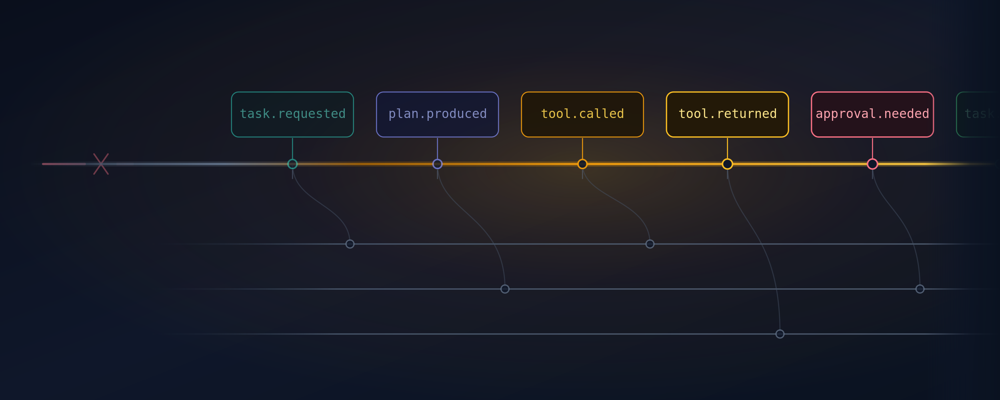
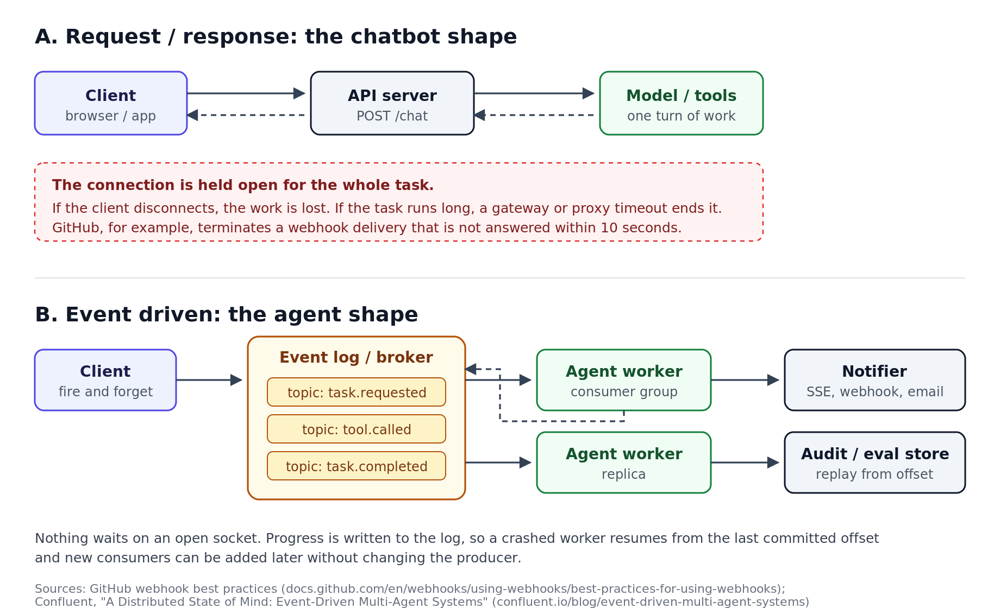
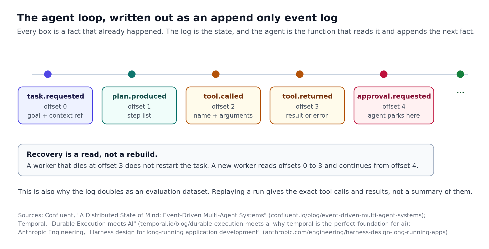
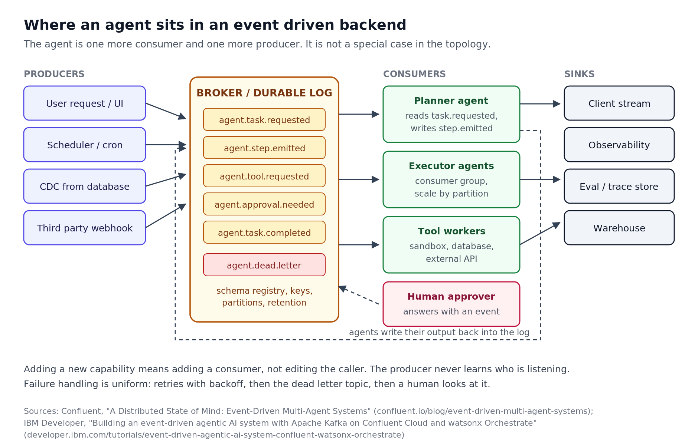

tldr; the agent is a consumer, not an endpoint
resources tagged at the end;
The chatbot system no longer holds#
Almost every AI feature that shipped between 2023 and 2025 was built in the same shape. A client sends a request, a server calls a model, and tokens stream back over the connection the client opened. It is the shape of a conversation, and it worked because the unit of work really was a conversation. One turn in, one turn out, a few seconds of latency, all of it comfortably inside a single HTTP request.
That shape has been breaking for the last year, and the reason is not that REST is bad. REST is fine. The problem is that a request and a response describe a transaction with a known, short duration, and the work we now hand to models does not have one. Once the agent loop runs inside the request handler, the lifetime of the work is coupled to the lifetime of a socket, and everything below follows from that.
Timeouts are everywhere and none of them are yours. Between the client and your process sit a browser, a CDN, a load balancer, an ingress controller and a gateway, each with an opinion about how long a connection may stay idle. GitHub, on the receiving side, expects a 2XX response to a webhook within ten seconds and terminates the connection if you take longer, which is why their documentation tells you to queue the payload and process it in the background.
Failure means starting over, and retries are unsafe. If the process restarts at step nine of twelve, there is no record of steps one through eight outside the memory that just disappeared. Worse, a client that retries a POST cannot know whether the first attempt already sent the email or issued the refund. A safe retry needs an identity for the work, and a bare request does not have one.
There is no room for anyone else to listen. A request has one caller and one callee. The moment an evaluation pipeline, an audit trail and a cost tracker all need to observe the same run, you add calls inside the handler, and the handler becomes a distribution hub nobody designed.
Waiting is not expressible. An agent that needs human approval before continuing would have to hold a connection open for hours, which no serious system allows. So teams reach for a database row, a polling loop and a state machine, and at that point they have built a queue by accident.

The rise of long running agents#
This stopped being theoretical because task durations changed by orders of magnitude in about eighteen months, while the transport underneath them did not change at all.
Anthropic's engineering team published a detailed account of building applications with a long running agent harness. In one run, a single sentence prompt asking for a browser based digital audio workstation produced a build that took three hours and fifty minutes and cost about $124 in tokens, with the generator agent alone running coherently for over two hours in one stretch. An earlier version of the harness ran six hours at roughly $200. Their baseline, a single agent with no harness, finished the same prompt in twenty minutes for $9 and produced an application whose core feature did not work.
The interesting detail for a backend engineer is not the cost. It is that the harness was built out of things that look like infrastructure rather than prompting. Work was decomposed into chunks, agents handed context to each other through structured artifacts written to files so a fresh agent could resume, and a separate evaluator agent read the generator's output and wrote findings back for it to act on. That is a producer, a consumer, and a durable record between them.
The providers moved the same direction. OpenAI's Responses API has a background mode whose entire purpose is to stop you waiting on the connection, because agents like Codex and Deep Research can take several minutes to solve a problem, and holding a socket open for that is a reliability problem rather than a design choice.
resp = client.responses.create(
model="gpt-5.6",
input="Audit this repository and open pull requests for every failing test.",
background=True, # returns immediately with status "queued"
)
# The connection is gone. The work is not.
while resp.status in {"queued", "in_progress"}:
sleep(2)
resp = client.responses.retrieve(resp.id)That is a job id and a status field. It is the smallest possible admission that the work has outlived the request, and once you accept it for the model call, you eventually accept it for everything around the model call.
Event driven is the future#
I want to be careful with this claim, because it is easy to overstate.
Event driven architecture is not new and it did not appear because agents needed it. It is the conclusion microservices reached a decade ago, for the same reason, which is that synchronous calls couple the availability and latency of components together in ways that get worse as a system grows. Confluent's writing on multi agent systems makes the connection directly, framing agents as components that emit and listen for events rather than components that call each other.
It is also not a universal answer. If your product is an assistant that replies in two seconds, a broker hop between every step buys nothing and costs latency. Request and response remains correct for short, interactive, single turn work. What is changing is the centre of gravity, as the share of AI work that is long, autonomous and asynchronous keeps rising, and that category needs a model which treats duration, failure and observation as normal conditions rather than exceptions.
What is event driven, exactly#
The core idea is a change in what a message means.
In a request and response system, a message is an instruction with an expectation attached. It says do this, and I will wait here until you tell me what happened. The caller must know the callee, must be running while the callee runs, and must handle the callee's failure as its own.
In an event driven system, a message is a statement of fact about something that already happened. It is past tense, immutable, and carries no expectation about who reads it. agent.tool.returned does not ask anyone to do anything. It records that a tool returned, and any number of parties may act on that, or none may.
That single change buys the rest. Because the producer does not know its consumers, you can add a consumer without touching the producer. Because the fact is durable, a consumer that was offline can read it later. Because the record is retained, a consumer that crashed can read it again.
Components of an event driven system#
The event. A fact, with a schema, a key, a timestamp and an identifier. Keeping events small matters more here than in ordinary systems, because prompts and tool outputs are large, so the payload usually belongs in object storage with a reference in the event.
Producers. Anything that observes a fact and writes it. A user action, a scheduled job, a change data capture stream off a database, an incoming third party webhook.
The broker, or the log. The durable, ordered, replayable middle. Apache Kafka is the common reference point, with Pulsar and Redpanda alongside it, and managed services such as Amazon SQS and EventBridge, Google Pub/Sub and Azure Event Grid covering the same need with different trade offs.
Topics and partitions. A topic is a named stream, a partition is the unit of ordering and parallelism inside it. Events sharing a key land on the same partition and stay ordered relative to each other, which is why keying agent events by task id matters.
Consumer groups and offsets. A group is a set of identical workers sharing partitions between them, so adding a worker rebalances the load without the producer knowing, and a worker that dies has its partitions reassigned to its peers. The offset is how far a consumer has read, and committing it after the work is durable rather than before is the difference between a crash losing work and a crash repeating it.
Schemas, delivery semantics and dead letters. A schema registry keeps loose coupling from becoming no coupling at all. Most systems deliver at least once, so duplicates are normal and handlers must be idempotent. Anything that exhausts its retry budget goes to a dead letter topic where a human can find it, rather than disappearing.
Durable execution on top. Temporal and Restate apply the same principle at the level of a function rather than a service. They journal each completed step and, on a crash, replay the journal, returning cached results for steps that already finished. For the inner loop of an agent this is often a better fit than raw topics.
Downsides and challenges#
Most of the cost of this design lands on the people operating it.
Debugging gets harder. No stack trace spans four topics and three services. You need correlation ids threaded through every event and distributed tracing from day one, and adding them later costs a quarter.
Eventual consistency reaches the interface. Once a write is acknowledged before it is applied, someone has to decide what the user sees in the gap. That is a product question as much as an engineering one.
Guarantees are narrower than people assume. Ordering holds within a partition, not across a topic. Exactly once delivery works within specific boundaries and does not extend to the third party API your tool just called, so you design for at least once and make effects idempotent.
The broker is a real system. Running Kafka well requires people who know how to run Kafka. For a small team a managed queue and a jobs table in Postgres will carry you a long way, and choosing that deliberately is not a failure of ambition.
Replay does not reproduce a model run. Replaying the log gives the same inputs, but a model may produce different output from the same input. Replay is for audit, evaluation and resuming, not deterministic reproduction, and treating it otherwise leads to bad conclusions during incident review.
Storage is not cheap. Agent traces are large, and retention that felt free for click events is not free for full conversation histories. This is where keeping payloads out of the log pays for itself.
Agents are nothing but a series of events#
Strip the framing away and an agent loop is observe, decide, act, repeated. Each of those is a fact that happened at a point in time, so the loop is already an event sequence whether or not anyone wrote it down as one.

Writing it down changes what the loop is made of. History stops being a list held in a variable and becomes a log held outside the process. The state of an agent is then the fold of every event up to a given offset, and the agent is a function that reads the log and appends the next fact. Recovery becomes a read rather than a rebuild.
This is quietly what the file based handoffs in Anthropic's harness were doing. An artifact written by one agent and read by the next is a durable, ordered record carrying state across a context reset. Same principle, filesystem instead of broker, which is reasonable at that scale and starts to strain as participants multiply.
The side benefit is that the log you built for reliability is also the dataset you needed for evaluation. A replayed run gives you the exact tool calls, arguments and results rather than a summary written after the fact, and that is usually the hardest data to obtain when you sit down to build a test harness.
How agents fit in the event driven backend design#
Once the agent is expressed as a consumer and a producer, it stops being a special component.

The multi agent patterns people write about map onto this cleanly. Orchestrator and worker becomes a keyed topic and a consumer group, where the orchestrator distributes work by key and never manages a connection to any individual worker, so workers can be added or lost without it knowing. A hierarchy is the same arrangement applied recursively, each non leaf agent orchestrating its own subtree. A blackboard, where agents contribute to a shared workspace without addressing each other, is a topic that several agents both produce to and consume from.
Human approval, the worst case under request and response, becomes unremarkable. The agent writes agent.approval.needed and stops. Hours later a person answers, a service writes agent.approval.granted, and a worker resumes from the offset where it stopped. Nothing was held open and nothing was lost.
consumer = Consumer({
"bootstrap.servers": "localhost:9092",
"group.id": "executor-agents",
"auto.offset.reset": "earliest",
"enable.auto.commit": False, # commit only after the work is durable
})
# ...
if already_processed(task_id, event["step_id"]): # dedupe on replay
consumer.commit(msg)
continue
result = execute_tool(event["tool"], event["arguments"])
producer.produce(
"agent.tool.returned",
key=task_id.encode(), # same key keeps a task's events ordered
value=json.dumps({...}).encode(),
)
producer.flush()
consumer.commit(msg)Two details there matter more than the rest. Automatic commits are off, so an offset only advances after the result is safely written, and the event is keyed by task id, so everything belonging to one task stays ordered relative to itself. Almost every duplicate action and out of order state bug I have seen in an agent system traces back to one of those two.
If you are starting from a working synchronous system, the migration that has worked for me is boring. Give every run a task id and persist it, move the loop out of the request handler into a worker with a queue in between, write each step as a row rather than a variable, and make each tool call idempotent on the task id and step id. Only then ask whether the volume and the number of consumers justify a broker, because for a lot of teams the answer is honestly no.
In conclusion#
There is a version of this article that says Kafka is having a second moment because of AI, and I do not think that is the useful reading. The useful reading is that the AI side of the industry is arriving at problems the distributed systems side has worked on for twenty years, and arriving from an unusual direction, having started at a chat box rather than a transaction log.
I wrote in an earlier piece that backend engineering was the most undervalued prerequisite for anyone trying to get into applied AI, and this is the clearest example I have of why. The hard parts of a long running agent are not prompting problems. They are ordering, idempotency, partial failure, backpressure, state handoff and observability, which is to say the parts of the job that were always hard and are now being met by more people.
If you are building agents that run longer than a request should, the next thing worth doing is not a better prompt. It is writing down what your agent's events actually are, and seeing how much of your architecture that one exercise decides for you.
Resources#
- OpenAI, background mode guide
- Anthropic Engineering, harness design for long running application development
- Anthropic Engineering, effective harnesses for long running agents
- Confluent, a distributed state of mind, event driven multi agent systems
- Confluent, the future of AI agents is event driven
- IBM Developer, building an event driven agentic AI system with Apache Kafka and watsonx Orchestrate
- GitHub Docs, best practices for using webhooks, including the ten second response window
- Temporal, durable execution meets AI
- Confluent Developer, Apache Kafka fundamentals
- Confluent Python client documentation